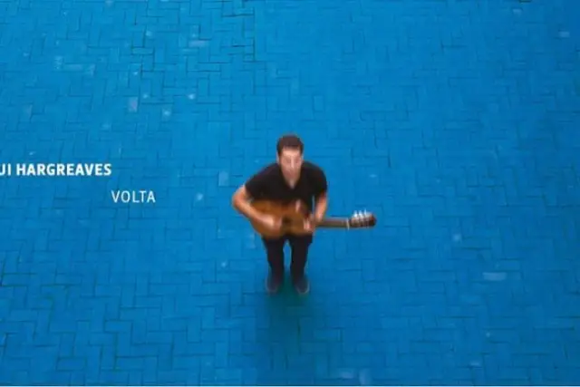

Gui Hargreaves concede entrevista e fala sobre seu novo álbum

O mineiro Gui Hargreaves acaba de lançar seu segundo trabalho, o disco “Volta”, que mostra todas as voltas que o mundo dá para a realização do que é verdadeiro, o encontro de pessoas afins e a materialização da arte.
O som desse trabalho traduz isso, mostrando em cores sonoras o significado de suas notas. Unindo artistas e influências das mais diversas possíveis. Como resultado desse esforço surgiram seis canções maravilhosas.
Pudemos contar com a grandiosidade e humildade de Gui para nos conceder uma entrevista falando sobre sua carreira, seu novo disco e as pretensões aonde seu talento musical podem leva-lo. Confira:
(Papo Alternativo) Qual a sensação que você quis trazer à tona com seu trabalho “Volta”?
(Gui Hargreaves) Procurei transmitir com esse álbum um pouco do que senti na estrada ano passado, tocando em países diferentes, buscando locais de “pouso” em terrenos desconhecidos. Vivi muitos momentos de emoções muito densas, mas quis transmitir tudo com a maior leveza que pude.
(Papo Alternativo) Você tem realizado muitos shows e/ou eventos para demonstrar esse talento? Como está sua agenda até o fim do ano?
(Gui Hargreaves) Acabei de me mudar para São Paulo e agora o desafio é conseguir rodar o Brasil, mostrando esse trabalho que venho construindo há alguns anos. Minha proposta até o final do ano é fazer mais shows no interior do que nas capitais.
(Papo Alternativo) Percebemos diversos estilos nesse trabalho: bossa nova, MPB, folk, entre outros. Com qual desses estilos você mais se identifica?
(Gui Hargreaves) Me identifico com todos estes e muitos outros além; a questão de estilo pra mim só existe enquanto proposta estética dentro de um trabalho específico, um álbum, um conceito que amarre aquilo ali. Meu objetivo é compor boas canções, e pretendo explorar a musicalidade e roupagem, em termos de arranjos e instrumentação que transitem entre várias áreas, muito além da MPB e folk. Quero levar minha canção a universos diferentes, mas o importante é que, enquanto canção, ela se sustente.
(Papo Alternativo) Sabemos que “Volta” é um trabalho repleto de participações especiais, quem foram as pessoas que fizeram parte dessa arte?
(Gui Hargreaves) A história de como nasceu esse disco é muito diferente. Ele não foi planejado.
Eu estava na Europa a convite da Francesca, com quem eu fui estudar, na Itália. Consegui passar para uma residência artística e meu plano era ficar por um mês só. Acabei optando por ir à Inglaterra depois e fiquei me apresentando em casas de shows, jam sessions, essas coisas. Acontece que meses antes, ainda na Itália, eu tinha conhecido uma pessoa, que morava na Inglaterra, que tinha me dado o cartão e que trabalhava com música. Mas eu não sabia especificamente com o que. Lá em Londres, ele me falou sobre o Ed Scull, dono de um estúdio novo em Londres e disse que eu tinha que gravar uma música com ele.
Eu não tinha planejado em repertório, não tinha planejado gravar, nada disso. Eu estava querendo só tocar fora do Brasil por um tempo. Aí pensei em um música recente que teria relação com música inglesa, apesar de eu não compor em inglês, e escolhi “Alone With You”. Bom, resumindo, fui no estúdio, que estava nas últimas etapas para inaugurar, gravamos essa música e o pessoal pediu para gravar outras músicas. Em uma sentada gravamos 6 músicas e quando saí da sala, me disseram: temos um disco! Em um mês fizemos arranjos novos, montamos o disco todo.
Foi realmente um presente, porque eu não conhecia as pessoas, os músicos que gravaram comigo. Foi um processo muito diferente de gravação, a gente não teve um prazo, uma ideia previa de arranjo, não teve uma obrigação de ter tantas músicas. O Ed estava a fim de testar o estúdio, que era novo, deu tudo muito certo. O resultado final estético foi uma exploração que teve a ver com quem tava lá, com os instrumentos que tínhamos disponíveis.
(Papo Alternativo) Essas músicas foram criadas exclusivamente para esse álbum, ou são canções que já haviam sido compostas e só ganharam vida?
(Gui Hargreaves) Não foram criadas pra álbum algum. Tive a sorte de encontrar esses camaradas que me fizeram o convite da gravação, me dando de presente este disco, mas o álbum e as canções foram escolhidas por causa do convite, não foram pensadas antes disso.
(Papo Alternativo) A capa é simples, mas de arte muito bem trabalhada. Quem foi o responsável pela fotografia e como se deu seu contato com essa pessoa?
(Gui Hargreaves) A capa é fruto de um feliz reencontro com o colega de “sixth form” (uma espécie de “ensino médio”) Michael Hani, com quem estudei em Plymouth no South West da Inglaterra. Primeiro dia em Londres, bagagens extraviadas, só tinha a roupa do corpo e o violão. Eis que o telefone apita com uma mensagem de Mike, dizendo que estava em Londres também: “vamos tomar um chopp?” Chegando lá, ele com câmera na mão sugeriu as fotos, eu aceitei. Um mês e meio depois disso, ligo pra ele pra dizer que as fotos seriam capa de um disco que estava acabando de gravar. O tratamento da foto, pro azul, foi obra do querido Márcio Pinho, a pedido meu que tive esse desejo de uma capa azul, e o projeto gráfico geral é por conta do Estúdio Guayabo (ambos de BH). O resultado é mesmo simples e potente.
(Papo Alternativo) “Volta” tem conquistado um agrado às pessoas? Como seu público tem reagido esse álbum?
(Gui Hargreaves) A reação foi a melhor de todas. O público aguardava um disco com arranjos bem trabalhados desde que comecei a me apresentar, com essas canções há mais de 4 anos. Algo que diferenciasse da maneira como sempre me ouviram, solo, voz e violão, que é também como apresentei o Braseiro em 2016. Acho que, no entanto, o que fiz com essas músicas lá em Londres conseguiu surpreender a todos esteticamente, e isso é muito legal pra mim, ao constatar que as respostas estão sendo super positivas.
(Papo Alternativo) Quais são as novidades que podemos esperar para o seu trabalho no próximo ano?
(Gui Hargreaves) Podem esperar mais surpresas, esteticamente falando. Não pretendo nem um pouco me apegar a uma identidade sonora específica pro conforto de ninguém. Preciso mudar e explorar, por isso acompanhem essa caminhada pelas redes sociais (instagram, facebook – @guihargreaves) e postagens de novos conteúdos no YouTube/guihargreavesmusic e Spotify.